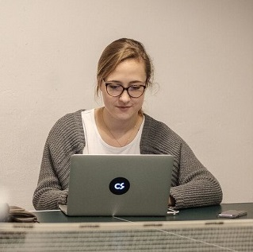

Dominika Szukała-Kosińska
front-end developer
Cześć! Mam na imię Dominika i skończyłam filologię włoską w Krakowie. Od ponad roku swój wolny czas poświęcam na naukę, żeby rozpocząć pracę jako front-end deweloper.
Co dotychczas?
Po studiach, pracowałam w różnych projektach, w kilku korporacjach. Dużo się tam nauczyłam, jednak brakowało mi dziedziny, która daje szersze perspektywy i ciągłą możliwość rozwoju. W czwercu zeszłego roku wpadłam na spotkanie krakowskich Geek Girls Carrots i stwierdziłam, że front-end to może być to.
Co teraz?
W międzyczasie otrzymałam stypendium i certyfikat w ramach programu Front-End Web Development Nanodegree zorganizowanego we współpracy Udacity z Google. Poza nauką, angażuję się w życie społeczności. Moderuję grupę "Programuj, dziewczyno!", która w tym momencie skupia ponad 15 tysięcy dziewczyn zainteresowanych światem IT. W czerwcu 2017, wraz z pozostałymi administratorkami, zorganizowałyśmy w Warszawie ogólnopolski meet-up, skierowany do osób początkujących i szukających dla siebie miejsca w branży.
Ponieważ sama jestem początkująca, angażuję się również w pomoc innym świeżakom. Stanowię część krakowskiej grupy organizującej krakowską edycję warsztatów z JavaScriptu dla dziewczyn. Działamy z ramienia Girls.js, pierwszy event miał miejsce w maju 2017, a drugi w październiku. Rośniemy szybko: w maju w warsztatach wzięło udział 9 dziewczyn, w październiku już 33.


Projekty
Sweet cake macaroon muffin. Lollipop macaroon lollipop liquorice. Bonbon cake sesame snaps cake cake.
- Candy Shop
- To do list
- Cracow Yummy Spots
Czego się uczę?
Tego, czego potrzebuję :) Oprócz JavaScriptu, coraz bardziej wkręcam się w Reacta i uważam też, że CSS ma moc.
Odezwij się
Jeśli masz jakieś pytania, daj znać. Z chęcią z Tobą porozmawiam :)